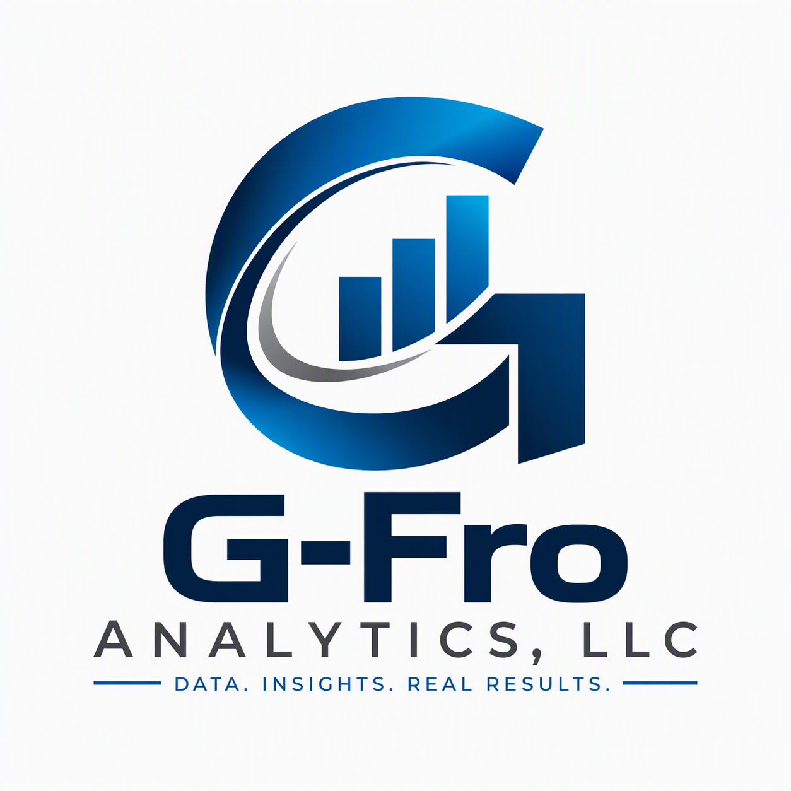

Power BI Dashboards
Executive dashboards, KPI scorecards, and operational reporting that help business owners understand what's happening inside their organization.

G-Fro Analytics helps small businesses transform spreadsheets, accounting systems, POS systems, and operational data into dashboards that improve visibility, reduce reporting effort, and drive better decisions.
Based in Green Bay, Wisconsin. Serving organizations throughout Northeast Wisconsin and remote clients nationwide.
Schedule a Free Dashboard ReviewExecutive dashboards, KPI scorecards, and operational reporting that help business owners understand what's happening inside their organization.
Replace manual spreadsheets and repetitive reporting processes with automated solutions built using Microsoft technologies.
KPI development, reporting strategy, business intelligence planning, and practical guidance focused on measurable business results.
Perfect for businesses looking to move beyond spreadsheets and gain visibility into key metrics.
Designed for businesses seeking deeper operational and profitability insights.
Complete decision-support solutions for leadership teams looking to build a data-driven organization.
Small business owners shouldn't need a team of analysts to understand their business.
G-Fro Analytics delivers practical dashboards, reporting solutions, and business insights that help organizations make better decisions without enterprise-level costs.
G-Fro Analytics works with organizations that want better visibility into operations, profitability, customer trends, and business performance.
Whether you're managing reservations, sales, staffing, production, financial performance, or operational reporting, G-Fro Analytics helps turn data into actionable business insights.
Follow us on LinkedIn for analytics tips, Power BI insights, reporting best practices, and updates from G-Fro Analytics.
Have reports, spreadsheets, or operational data that aren't providing the insights you need?
I'll review your current reporting process and identify opportunities to improve visibility, automate reporting, and create dashboards that help you make better decisions.
No obligation. No sales pressure. Just practical advice.
Email: gfroelich@gfroanalytics.com